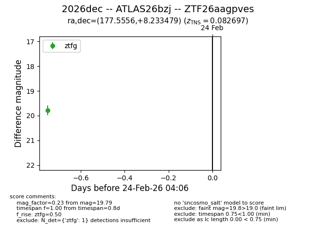
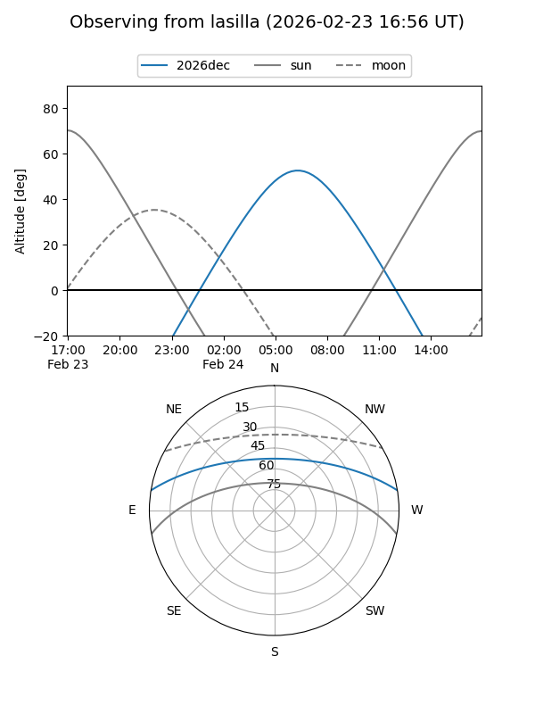
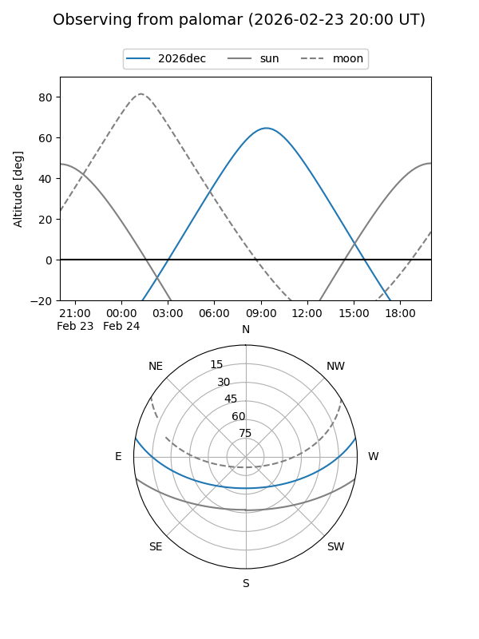

2026dec
Target 2026dec at 2026-02-24 09:08
Aliases and brokers:
FINK: link
Lasair: link
ALeRCE: link
TNS: link
YSE: link
alt names
ZTF26aagpves (ztf,fink_ztf)
2026dec (tns,yse)
ATLAS26bzj (atlas)
Coordinates:
equatorial (ra, dec) = 177.5556,+8.23348
equatorial (HMS+DMS) = 11:50:13.34,+08:14:00.52
galactic (l, b) = (262.6145,+66.18879)
Flags:
Photometry:
last ztfg=19.79
1 ztfg detections
Lightcurve

Visibility


Additional plots